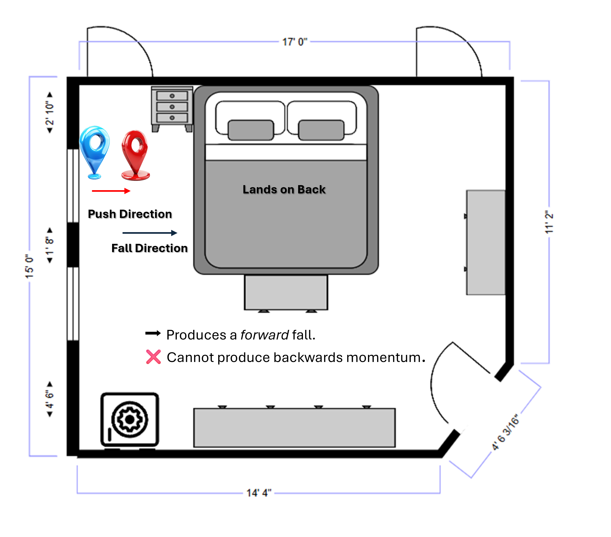
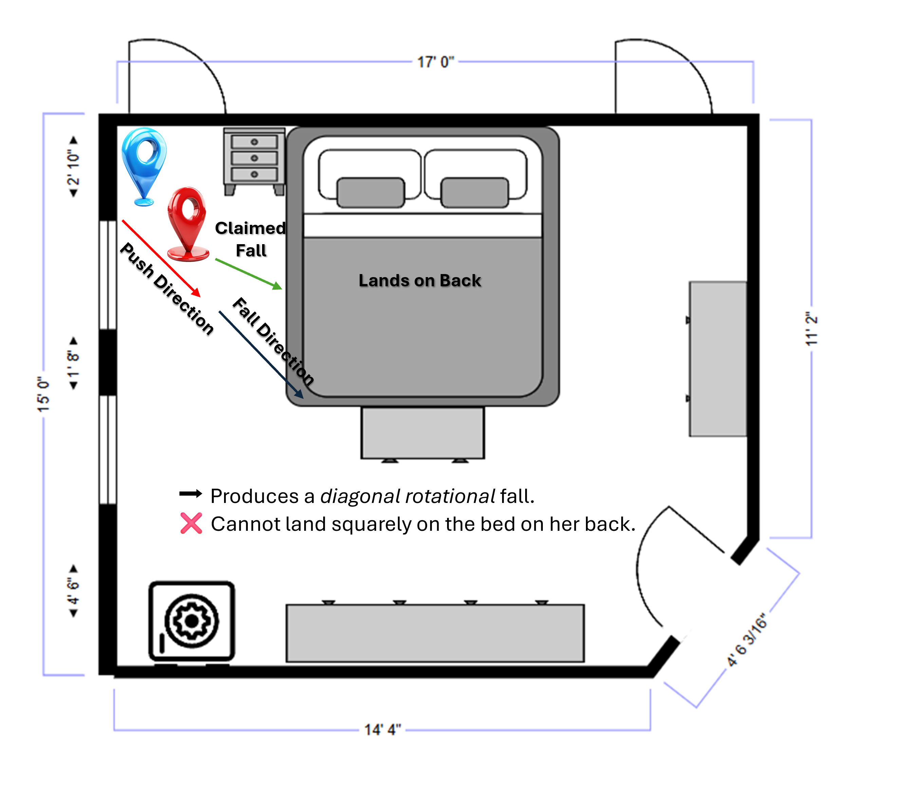
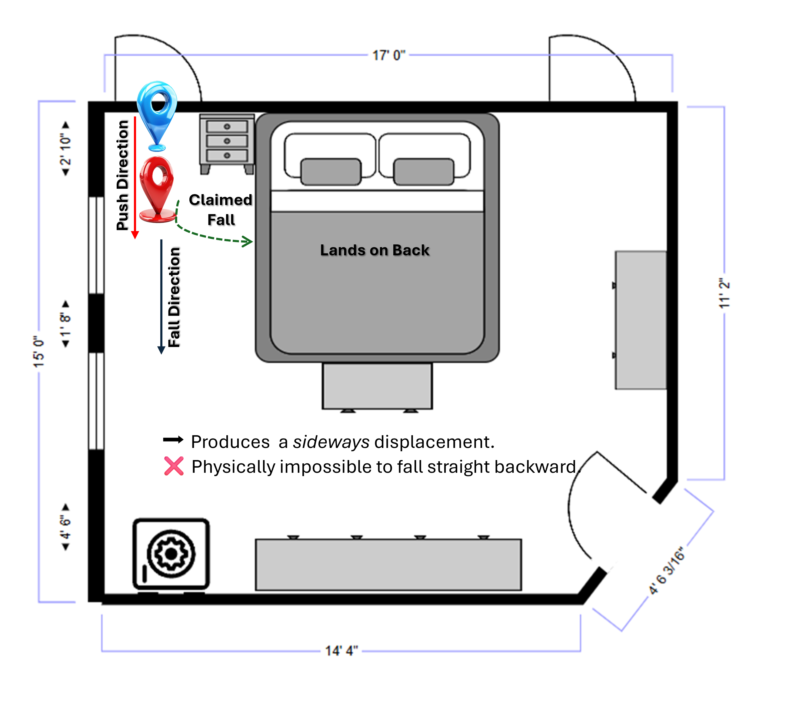

Scene & Push Dynamics
Since no scene analysis was done by law enforcement the defense offers the following.The bathroom door leads into an open doorway area that is narrow and confined as it enters the bedroom. Immediately outside of that doorway is a large bed whose mattress is waist height.
The bedroom layout creates a short, straight path from the bathroom door to the space beside the bed.
There is not enough lateral space for a person to exit the bathroom and simultaneously allow:
another adult to stand "behind and to the side," while also having enough angle to create a backward push that sends someone directly backward onto the center of the bed.
This spatial reality matters, because her shifting statements require different physical positions that cannot all be true.
Physics
Major Contradictions Between Her
Testimony & The Physical Geometry
Direction of Force vs. Direction of Fall
- • "I was pushed backwards onto his bed."
- • "I landed on my back."
- • "He was behind me."
- • "He was behind me but not directly behind me."
- • "He pushed me from the side."
Physical Reality
- • A side push does not send someone straight backward onto the bed.
- • A push from behind-right sends the person diagonally forward-left, not backward.
- • Falling onto one's back requires a direct backward push from directly in front of or slightly offset but still in front of the person.
➡️ Conclusion:
Her described push-angle is not compatible with the resulting body motion she claims.
Statement Analysis
Contradictions with Interview Statements
- • "I got grabbed and pushed backwards onto his bed."
- • "When I went to walk I was pushed backwards."
- • "He stood in the doorway and told me he was going to watch me."
- • "I told him to get out… he stood in the doorway."
Conflicts:
- • If he is in the doorway, she cannot "walk out" — he blocks the path.
- • If he told her he was going to "watch" her from the doorway, it would mean he spoke but she said that he never said a word during her testimony.
- • If she "walked out," he cannot still be "standing in the doorway. He would have had to move but it is never mentioned. He ends up magically behind her.
➡️ Conclusion:
Her statements to law enforcement negate her courtroom version.
Position
Conflicting Position of the Accused
She Testifies:
- • He was behind me.
- • He was not directly behind me.
- • He was to my right and behind me.
- • He was standing in the doorframe.
- • He took only "a half step forward."
Physical Reality:
- • The bathroom doorway is narrow.
- • If he is in the doorframe, he physically blocks her exit.
- • If she passed him, he cannot be "behind" her without stepping back into the bedroom first, then turning, then pushing.
- • None of that occurs in her story.
➡️ Conclusion:
These arrangements are incompatible with the geometry of the bedroom.
Motion Analysis
Conflicting Accounts of Her Motion
- Version 1:
"I went to walk out… I got grabbed and pushed backwards onto his bed."
- Version 2:
"He allows you to come out of the bathroom… while he is turned around he pushes you…"
- Version 3:
"He was in the doorway… I made it here… he was here… he took maybe a half step forward and then I got pushed."
Physical Reality:
- • If he is turned around (facing away), he cannot initiate a pushing motion without first rotating.
- • If he is in the doorway, she cannot exit past him.
- • If she "made it out," then he is behind her, not in the doorway.
- • These cannot simultaneously be true.
➡️ Conclusion:
Her path of travel and his placement shift in ways that cannot exist in real physical space.
Reconstruction
Combined Inference (Deductive Reconstruction)
A coherent physical reconstruction must satisfy:
- • Location of persons
- • Available space
- • Angle of force
- • Direction of fall
- • Final landing position
Her story changes each time a physical impossibility is exposed:
- • When asked if he was behind → she says yes.
- • When told he couldn't push from there → she says he wasn't "directly" behind.
- • When shown spatial issues → she moves him to the right.
- • When told that wouldn't push her backward → she changes to "the side."
- • When reminded she landed on her back → she reverts to "from behind."
➡️ Conclusion:
This pattern is indicative of ad hoc adjustment, not physical memory.
Logic
Logical Contradictions in Succession
- 1. He is behind her.
- 2. He is behind her but not behind enough to push.
- 3. He is to the right side.
- 4. He is in the doorway when she passes him but they are both large and they both could not fit in the doorway.
- 5. He takes only a half-step before pushing.
- 6. She falls straight backward onto the bed.
➡️ Conclusion:
No geometric model or any version of reality satisfies all of these contradictions.
Summary of Physical Impossibilities
The accuser's testimony contains at least three mutually exclusive descriptions of where the defendant stood and how the push occurred.
No single geometric arrangement satisfies all of her claims. This pattern of shifting details—each time adjusting to avoid a newly exposed impossibility—is
consistent with fabrication rather than genuine recall of a traumatic event.
Bedroom Layout – Claimed Assault Location
Lacks sufficient space for two adults in the doorway area
Two witnesses outside the window by the fire.
An Alexa by the bed that is set to send alerts if anyone says, "I need help."
Physical Geometry Exhibits
These diagrams visually demonstrate the biomechanical contradictions in her account —
specifically, the mismatch between her described push angle, the direction of force, and
the backward fall she claims occurred. No configuration she provided is compatible with
basic physical mechanics.


